Tài nguyên hình ảnh
Họ sự kiện chạy trên một bảng merge riêng, song song bảng chính.
Mô tả
- Họ sự kiện chạy trên một bảng merge riêng, song song bảng chính.
- Vật phẩm/công cụ sự kiện kiếm từ việc giao đơn ở bảng chính (hoặc mua gói), sau đó merge trên bảng sự kiện để đạt mục tiêu chủ đề.
- Năm dạng: Adventure (tìm kho báu bằng công cụ: Dogpark, Witch, Autumn leaf), Multiboards (nhiều stage, merge lấy chìa khóa sang stage kế: Springtide Gardens, Sublime Sunbathing, Moon26, Sleepover, Crochet), Farmboard (nông trại: hạt giống mở ruộng, cừu cần xén lông, sương mù mở bằng chìa: Unicorn 'Tony's in the Sky', Rainforest 'Tony's Rainforest Recovery', Halloween26 'Tony's Cauldron Cookery'), PureBoard (Dogpark) và Stickerboard (Ice Rescue: đào tuyết tìm tên lửa phá băng cứu động vật).
Còn thiếu / chưa xác minh
Mở khóa & điểm vào
Theo lịch server và cấp người chơi; có đếm ngược trước khi bắt đầu ('Event starts in:').
Điểm vào:
- <Theme><Type>_entry trên bảng chính (BoardEntry)
- Bong bóng đếm ngược
- Nút 'Go to Kitchen' để quay lại bảng chính
Cách hoạt động
- Trước sự kiện: đếm ngược → 'Event starts!' → Go!.
- Hướng dẫn: giao đơn để nhận vật phẩm/công cụ sự kiện; chạm để thêm vật phẩm lên bảng sự kiện rồi merge.
- Mỗi dạng có mục tiêu: Adventure — merge công cụ để đào ra các kho báu trong danh sách, xong toàn bộ 'All treasure found!'; Multiboards — merge để ra chìa khóa mở cửa stage kế; khi sang stage (Go/Stay) phần thưởng còn lại tự thu và vật phẩm sự kiện chuyển sang stage mới; hàng khóa 'Unlock on the next stage!'; Farmboard — gieo hạt mở thêm ruộng ('Get more seeds to unlock more fields'), xén lông cừu trước khi cho ăn, ô sương mù cần chìa từ merge, có gợi ý boost; Stickerboard — dùng công cụ đào tuyết, nhặt tên lửa, phá băng cứu động vật, mỗi con được cứu cho điểm tiến tới mốc thưởng 'Icy Incentives', stage mới chuyển toàn bộ vật phẩm.
- Sổ 'book' liệt kê chuỗi vật phẩm theo chủ đề.
- Vật phẩm thừa kéo vào ô xóa.
- Kết thúc: thành công (success) hoặc 'Event over!' (fail) — có thể tiếp tục khám phá bảng để nhận thêm thưởng sau khi hoàn thành mục tiêu.
Luồng chi tiết theo code
Trước sự kiện: đếm ngược → 'Event starts!' → Go!. Hướng dẫn: giao đơn để nhận vật phẩm/công cụ sự kiện; chạm để thêm vật phẩm lên bảng sự kiện rồi merge. Mỗi dạng có mục tiêu: Adventure — merge công cụ để đào ra các kho báu trong danh sách, xong toàn bộ 'All treasure found!'; Multiboards — merge để ra chìa khóa mở cửa stage kế; khi sang stage (Go/Stay) phần thưởng còn lại tự thu và vật phẩm sự kiện chuyển sang stage mới; hàng khóa 'Unlock on the next stage!'; Farmboard — gieo hạt mở thêm ruộng ('Get more seeds to unlock more fields'), xén lông cừu trước khi cho ăn, ô sương mù cần chìa từ merge, có gợi ý boost; Stickerboard — dùng công cụ đào tuyết, nhặt tên lửa, phá băng cứu động vật, mỗi con được cứu cho điểm tiến tới mốc thưởng 'Icy Incentives', stage mới chuyển toàn bộ vật phẩm. Sổ 'book' liệt kê chuỗi vật phẩm theo chủ đề. Vật phẩm thừa kéo vào ô xóa. Kết thúc: thành công (success) hoặc 'Event over!' (fail) — có thể tiếp tục khám phá bảng để nhận thêm thưởng sau khi hoàn thành mục tiêu.
Tài nguyên hình ảnh (15)
15 bảng sprite trích từ bundle sự kiện trên CDN hotfix 3.99.0 (mỗi bảng là một chủ đề/biến thể; sprite rời, không phải màn hình đã dựng). Bấm ảnh để phóng to; nhãn UC dẫn tới use case tương ứng.

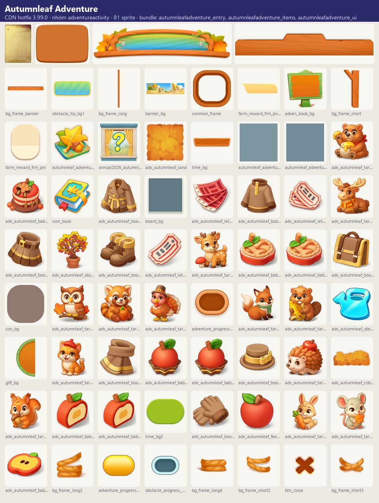

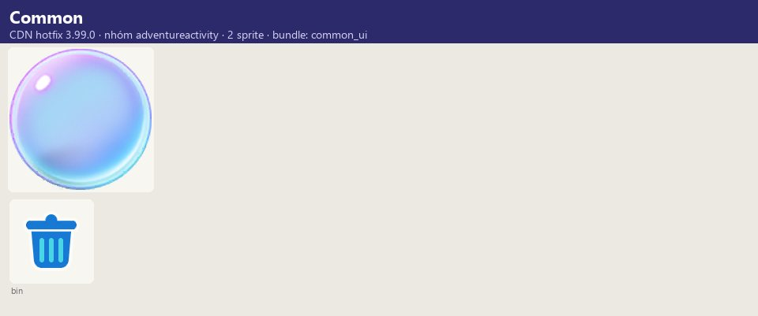

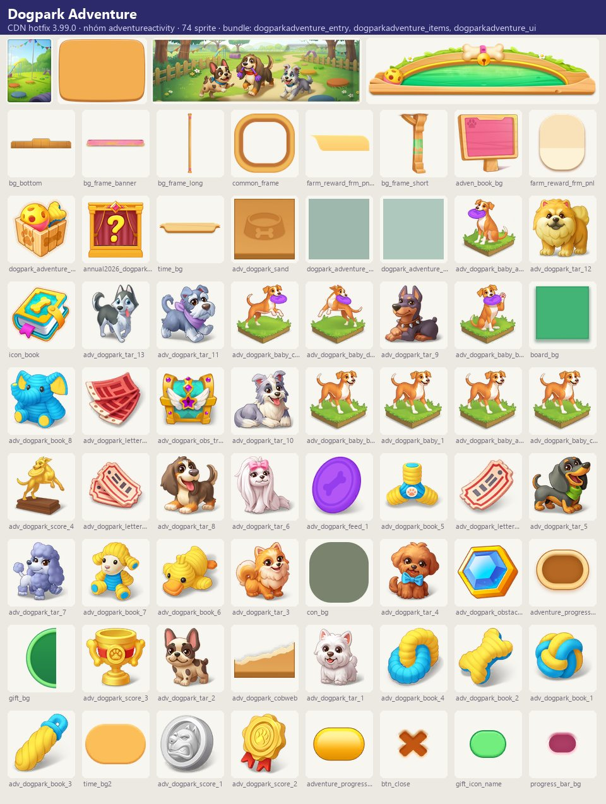

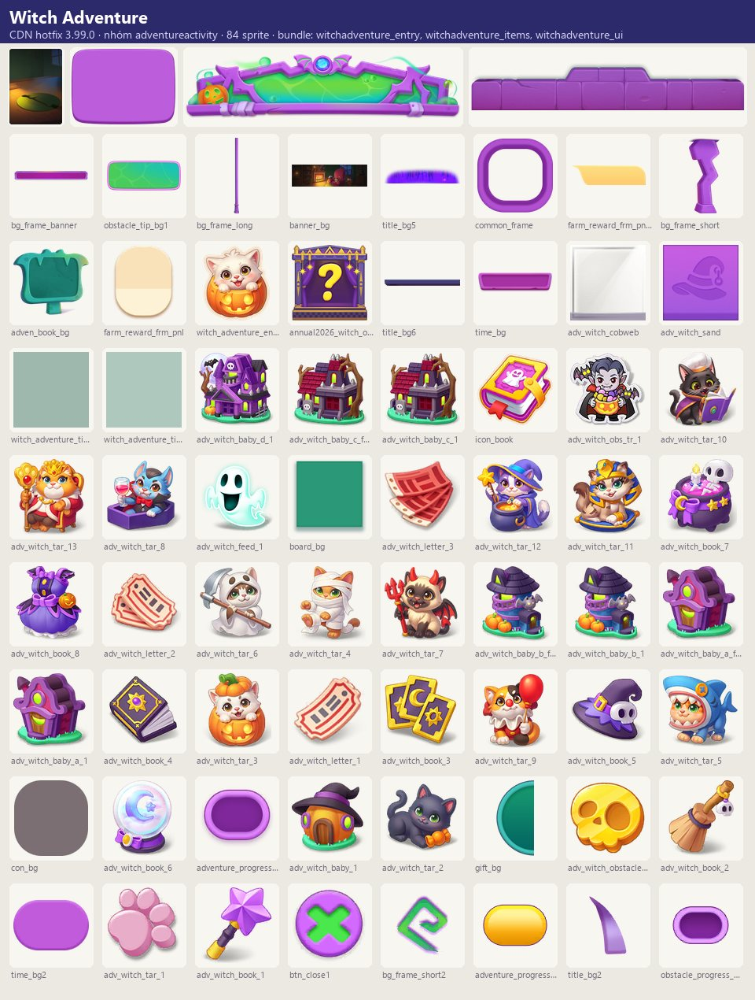

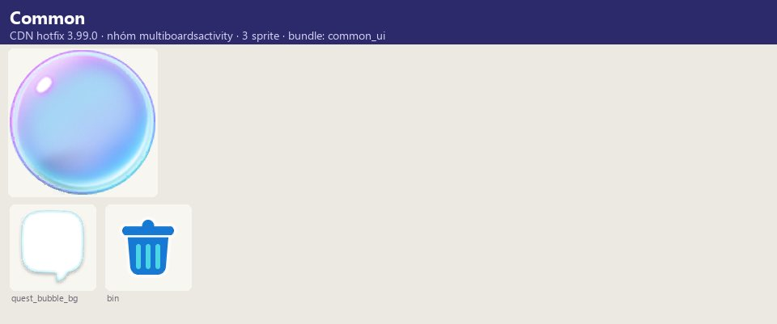

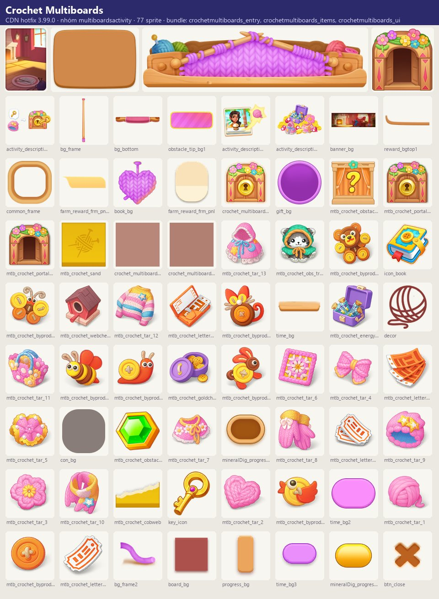

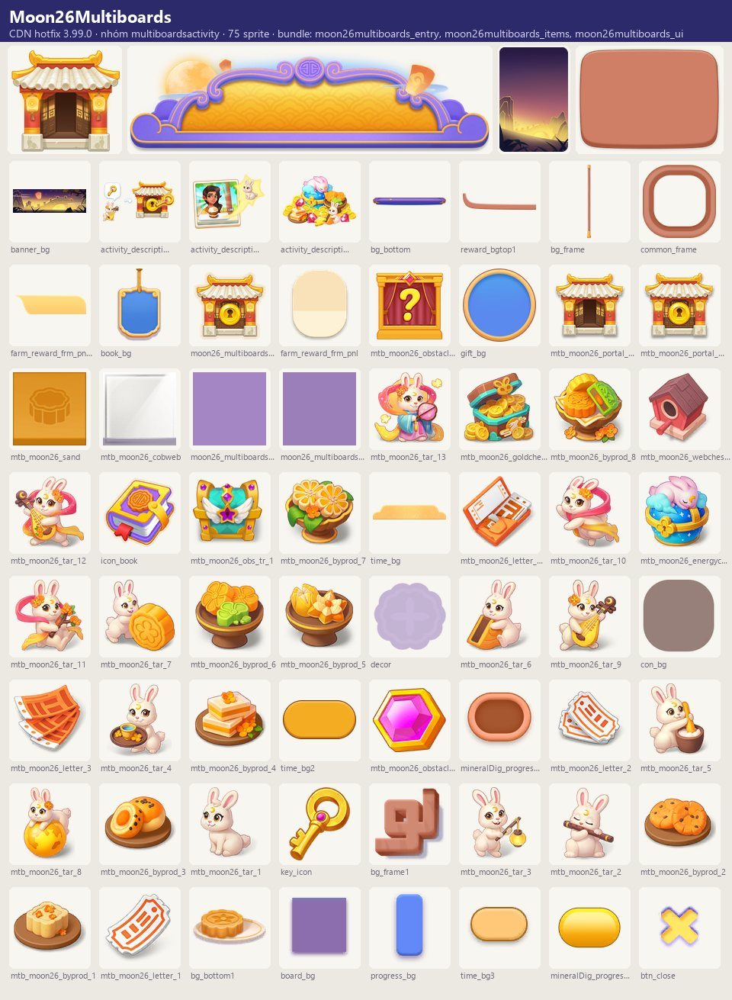

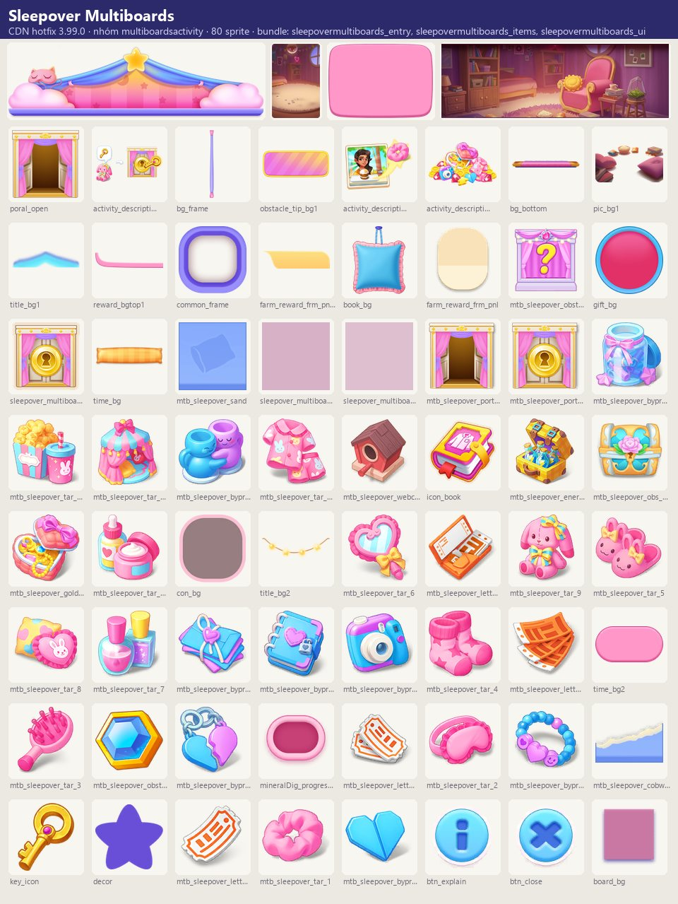

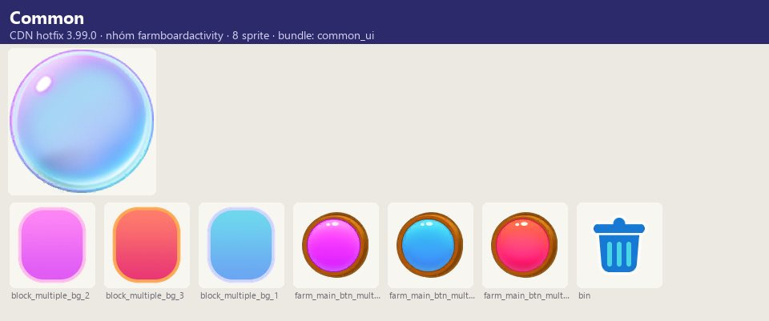

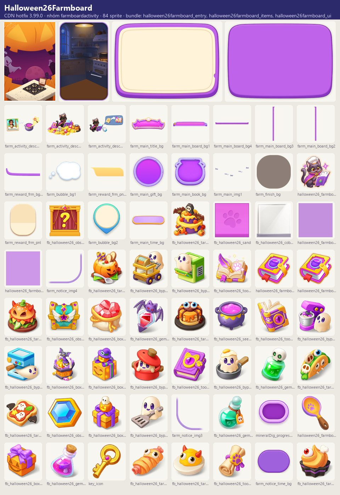

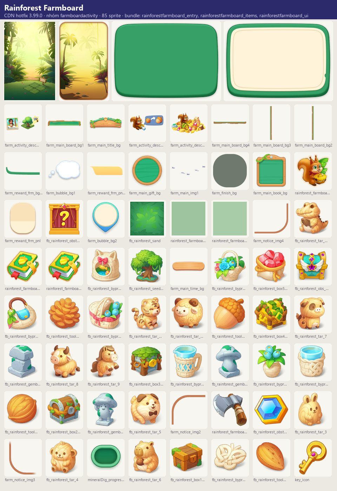

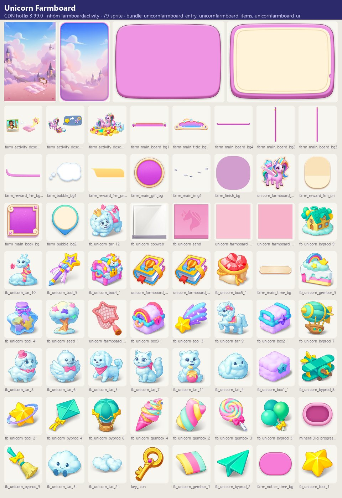

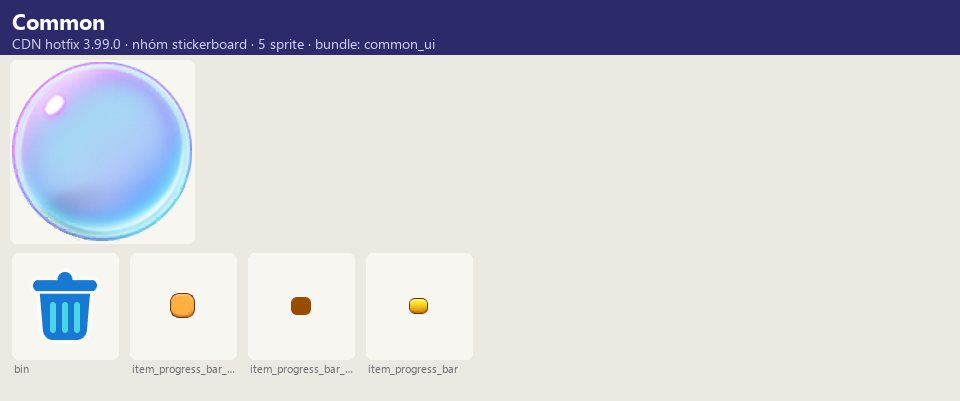

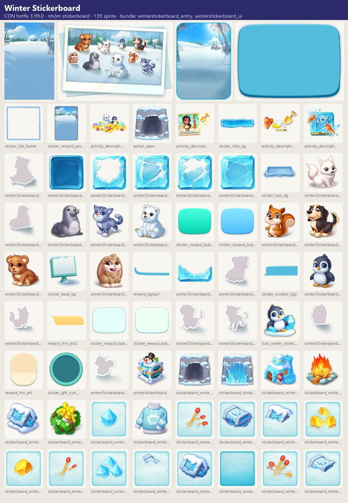

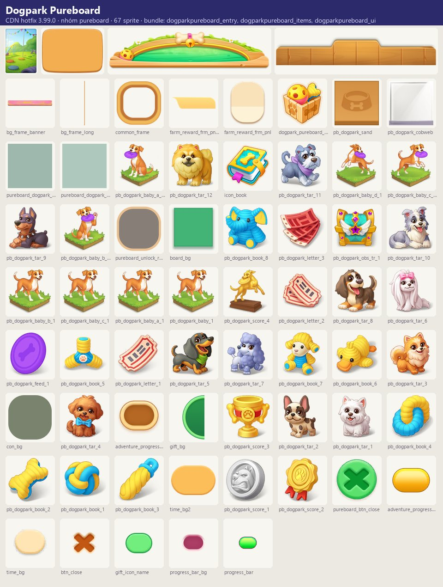
Số liệu chính
| Chỉ số | Giá trị | Nguồn |
|---|---|---|
| Skin/biến thể có bundle trên CDN; server chọn skin nào chạy | 1: Dogpark Pureboard | Biến thể chủ đề — nhóm pureboard — facts/runtime/decoded/cdn_themes.json |
| Skin/biến thể có bundle trên CDN; server chọn skin nào chạy | 1: Winter Stickerboard | Biến thể chủ đề — nhóm stickerboard — facts/runtime/decoded/cdn_themes.json |
Use case (7)
Bấm vào từng use case để mở. Mở/đóng tất cả
UC-01 Nhận vật phẩm sự kiện từ đơn
Các bước- Giao đơn
- Nhận vật phẩm/công cụ sự kiện
| Actor | Player |
|---|---|
| Trigger | Giao đơn bảng chính |
| Điều kiện | Sự kiện chạy |
| Kết quả | Có tài nguyên chơi sự kiện |
| Quy tắc / số liệu | Buff Event Items/Tools Plus nhân đôi (order_buff_adventure/multiboards/farm/pureboard) |
| Evidence | text *_instruction_1, stickerboard_tool_bubble, order_buff_* |
UC-02 Adventure – tìm kho báu
Các bước- Thêm công cụ lên bảng
- Merge
- Đào ra kho báu
| Actor | Player |
|---|---|
| Trigger | Vào bảng Adventure |
| Điều kiện | — |
| Kết quả | 'All treasure found!' |
| Quy tắc / số liệu | Có booster năng lượng riêng (adventure_guide_boost_2: tốn nhiều năng lượng hơn, ra vật phẩm cấp 2) |
| Evidence | text adventure_*; prefab AdventureActivity/* |
UC-03 Multiboards – chìa khóa stage
Các bước- Merge ra chìa
- Mở cửa 'Go to the Next Stage'
- Chọn Go/Stay
| Actor | Player |
|---|---|
| Trigger | Đủ chìa |
| Điều kiện | — |
| Kết quả | Sang stage mới, vật phẩm sự kiện được chuyển |
| Quy tắc / số liệu | Đi tiếp: thưởng còn lại tự thu |
| Evidence | text *_multiboards_door_*, *_multiboards_desc, *_multiboards_linelock_hint |
UC-04 Farmboard – nông trại
Các bước- Gieo hạt mở ruộng
- Xén lông cừu rồi cho ăn
- Merge lấy chìa mở sương mù
| Actor | Player |
|---|---|
| Trigger | Vào bảng nông trại |
| Điều kiện | — |
| Kết quả | Hoàn thành mục tiêu nông trại |
| Quy tắc / số liệu | Chuỗi vật phẩm nông trại 82xx–85xx (Old Post → Fancy Scarecrow, Sparrow → Fabulous Peacock, Barn…) |
| Evidence | text farmboard_feedlater_hint, farmboard_foglocked_hint, farmboard_lockedfield_hint, farmboard_boost_hint, *_farmboard_* |
UC-05 Stickerboard – Ice Rescue
Các bước- Dùng công cụ đào tuyết
- Nhặt tên lửa
- Phá băng cứu động vật
- Tích điểm tới mốc thưởng
| Actor | Player |
|---|---|
| Trigger | Vào bảng |
| Điều kiện | — |
| Kết quả | 'Rescue Complete!' |
| Quy tắc / số liệu | Sang stage: mọi vật phẩm chuyển theo |
| Evidence | text winterStickerboard_*, Stickerboard_stage_* |
UC-06 Xóa vật phẩm thừa
Các bước- Xác nhận 'cannot be recovered'
| Actor | Player |
|---|---|
| Trigger | Kéo vào ô xóa |
| Điều kiện | — |
| Kết quả | Giải phóng ô |
| Quy tắc / số liệu | — |
| Evidence | text *_bubble_delete, *_delete_desc |
UC-07 Kết thúc
Các bước- Success/Complete hoặc Fail
| Actor | System |
|---|---|
| Trigger | Hết giờ / hoàn thành |
| Điều kiện | — |
| Kết quả | Đóng sự kiện; có thể tiếp tục khám phá sau khi hoàn thành |
| Quy tắc / số liệu | — |
| Evidence | text *_success_*, *_complete_*, *_fail_* |
Cấu hình (6)
Gộp mọi nguồn: const trong code, JSON mặc định trong Resources, bảng static, storage key, AB test, cờ server.
| Nguồn | Key | Kiểu | Giá trị | Ý nghĩa | Nơi định nghĩa |
|---|---|---|---|---|---|
| asset | Chủ đề đóng gói | list | Adventure: Dogpark, Witch, autumnleaf; Multiboards: Crochet, Moon26, Sleepover (+văn bản Spring, Summer); Farmboard: Halloween26, Rainforest, Unicorn; PureBoard: dogpark; Stickerboard: Winter | UIPrefabConfig | |
| CDN hotfix 3.99.0 (catalog Addressables + bundle) | Biến thể chủ đề — nhóm adventureactivity | list | 3: Autumnleaf Adventure, Dogpark Adventure, Witch Adventure | Skin/biến thể có bundle trên CDN; server chọn skin nào chạy | facts/runtime/decoded/cdn_themes.json |
| CDN hotfix 3.99.0 (catalog Addressables + bundle) | Biến thể chủ đề — nhóm farmboardactivity | list | 3: Halloween26Farmboard, Rainforest Farmboard, Unicorn Farmboard | Skin/biến thể có bundle trên CDN; server chọn skin nào chạy | facts/runtime/decoded/cdn_themes.json |
| CDN hotfix 3.99.0 (catalog Addressables + bundle) | Biến thể chủ đề — nhóm multiboardsactivity | list | 3: Crochet Multiboards, Moon26Multiboards, Sleepover Multiboards | Skin/biến thể có bundle trên CDN; server chọn skin nào chạy | facts/runtime/decoded/cdn_themes.json |
| CDN hotfix 3.99.0 (catalog Addressables + bundle) | Biến thể chủ đề — nhóm pureboard | list | 1: Dogpark Pureboard | Skin/biến thể có bundle trên CDN; server chọn skin nào chạy | facts/runtime/decoded/cdn_themes.json |
| CDN hotfix 3.99.0 (catalog Addressables + bundle) | Biến thể chủ đề — nhóm stickerboard | list | 1: Winter Stickerboard | Skin/biến thể có bundle trên CDN; server chọn skin nào chạy | facts/runtime/decoded/cdn_themes.json |
Giao diện (UI)
| Element | Class | Mục đích |
|---|---|---|
| Bảng sự kiện | <Type>Activity/<Theme>*_prefab/*MainWindow | |
| Chướng ngại | BoardObstacleView_mtb_*, BoardObstacleView_fb_* |
Storage keys
activity board
Chưa đọc được / ghi chú
- Bố cục bảng, chuỗi vật phẩm và thưởng mốc nằm trong bundle/server
Tính năng liên quan
Bảng merge Đơn hàng & khách StreakCheckIn (nhiệm vụ merge_adv/merge_mtb), Bundles (OnePlusFourFarm)
Nguồn đã đọc
- notes/packs/SideBoardEvents.md
- facts/runtime/cdn_png/index.json + screens/cdn_shots.json (bundle sự kiện CDN)